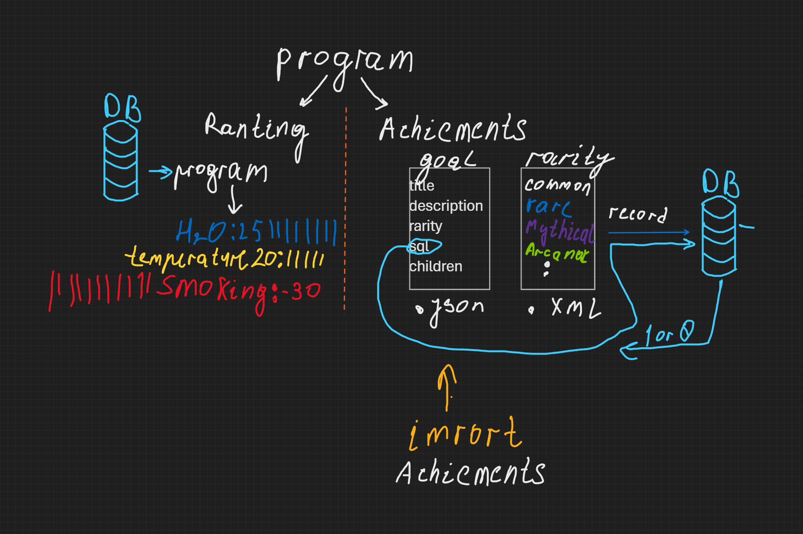

Aplikacja do zbierania danych statystycznych czynników wpływających na bieg oraz oceniania ich wpływu na podstawie modeli statystycznych.
Funkcje aplikacji:
- Możliwość wprowadzania, modyfikowania lub usuwania parametrów i ich wartości. Na przykład, użytkownik może chcieć zbadać, jak słuchanie muzyki wpływa na bieg. Wprowadza ten parametr i zbiera statystyczne dane, tworząc raporty dotyczące wpływu różnych czynników.
- Możliwość zaimportowania/wyeksportowania danych z/do pliku XML archiwalnych. Użytkownik może przechowywać i udostępniać historyczne dane z badań w formie plików XML, co ułatwia zarządzanie danymi.
- Tworzenie rankingów czynników wpływających na bieg. Na podstawie zebranych danych i analizy statystycznej, aplikacja tworzy ranking czynników, które najbardziej wpływają na bieg, zgodnie z zainteresowaniami użytkownika.
- Aplikacja ma na celu pomóc użytkownikowi zrozumieć, które czynniki mają największy wpływ na jego bieg, umożliwiając lepsze dostosowanie treningu do własnych preferencji i celów.
Module program
